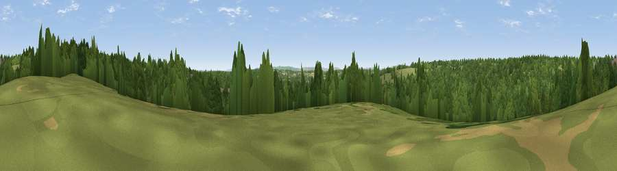

Viewpoint near Handcross
#43560 in England · top 87% of its area beats it · near HandcrossThe view, rendered

A 360° render of this exact spot computed from the terrain model, tree cover and land cover — summer colours, afternoon light, calibrated against photographs of famous viewpoints. Real trees, hedges and buildings will differ in detail.
The panorama
Grey silhouette: terrain skyline in each direction (720 bearings, Earth curvature and refraction included). Dashed green: skyline with trees (+15 m) and buildings (+8 m) as obstacles. Blue strip: how far the ground is visible on each bearing.
Where the view opens
Wedge length = distance to the farthest visible ground on that bearing (vegetation-aware). Rings at 10, 25 and 50 km.
What fills the view
63% woodland · 33% grassland · 3% cropland · 1% built-up
Angular shares of the visible panorama (visual magnitude), not map area. Landscape diversity 0.35 (0–1 Shannon).
Key numbers
More beautiful places nearby
The staircase of upgrades: each row has a higher view potential than everything closer. Driving times are estimates from straight-line distance, calibrated against real road routing — check an actual route before setting out.
| Place | Direction | Drive | Score |
|---|---|---|---|
| Viewpoint near Handcross | NE · 1 km | ~2 min | 49.2 |
| Viewpoint near Balcombe | E · 2 km | ~5 min | 49.7 |
| Viewpoint near Turners Hill | NE · 6 km | ~13 min | 49.9 |
| Viewpoint near Turners Hill | NE · 9 km | ~17 min | 51.6 |
| Viewpoint near Kingsfold | WNW · 12 km | ~22 min | 55.0 |
| Wolstonbury Hill | S · 16 km | ~28 min | 79.6 |
| Viewpoint near Westmeston | SSE · 17 km | ~30 min | 81.1 |
| Ditchling Beacon | SSE · 18 km | ~31 min | 81.8 |
51.05487, -0.17542 · source: screening · position refined by local search. Computed location — check access rights before visiting.